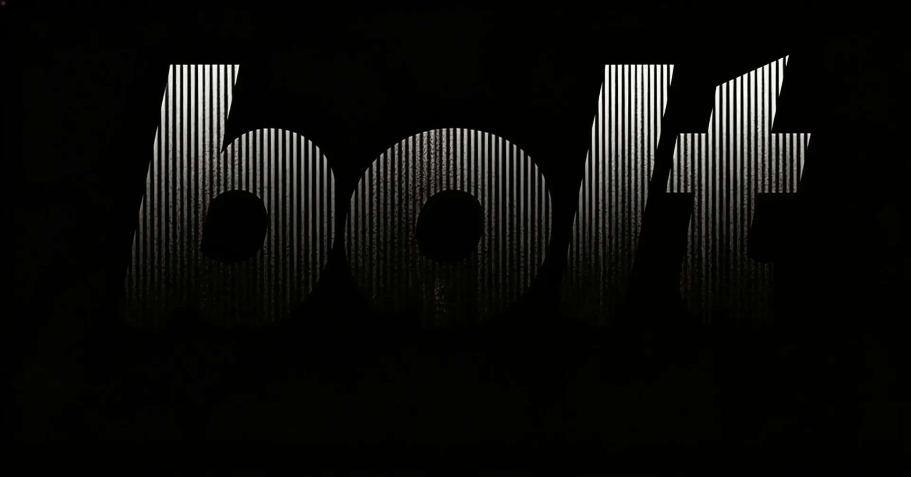

Featured
Build with the CLI
Ship full-stack apps from your terminal — same model, no browser tab required.
Product Overview
Bolt Slides
An AI deck builder that turns a prompt into a live, interactive presentation — shareable by link, no account needed.
Top Use Cases
Business Type
Featured collection
Bolt Templates
Production-ready starting points — dashboards, storefronts, portfolios, and more. Fork one and make it yours.
Support
Build and Learn
Build with the CLI →
Bolt Slides →
Bolt Templates →
Portfolios, landing pages, internal tools, MVPs, dashboards, ecommerce — clone a working template and customize it in Bolt.
No templates match your filter.
Are you ready?
Join thousands of teams shipping faster with our enterprise platform.
